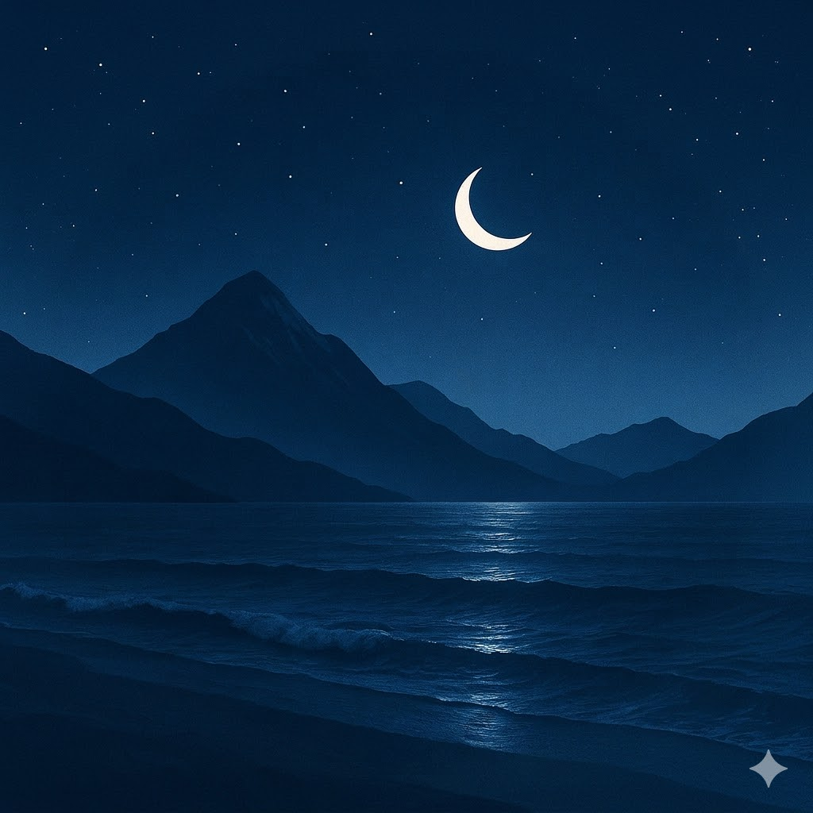
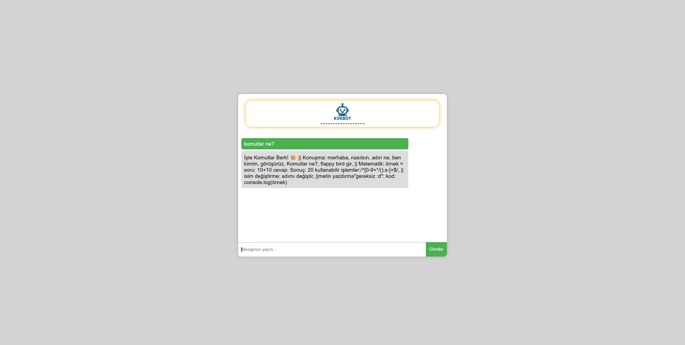
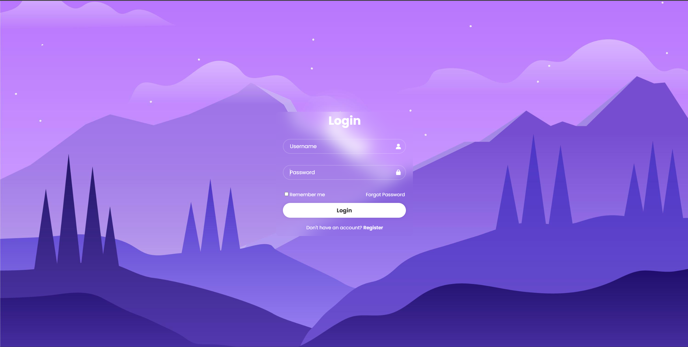

AnaSayfa
Hakkımda

Berk Açıkgöz
Java Geliştirici & Teknoloji Tutkunu
Hakkımda Daha Fazlası
Projelerimi İncele
×
Projelerim

KvkBot projem.
https://berkovic36.github.io/kvkbot/

Login projem.
https://berkovic36.github.io/login/